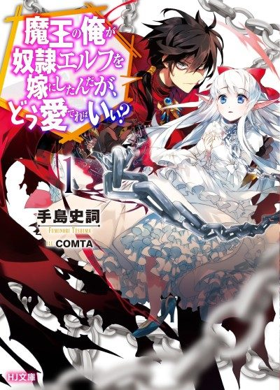

An Archdemon's Dilemma: How to Love Your Elf Bride
魔王の俺が奴隷エルフを嫁にしたんだが、どう愛でればいい？
We haven't found where the anime ends in the light novel yet.
7.3AniList score
—Animeter, no votes yet
12episodes
Is it worth pushing through?
Built from what visitors report across all 12 episodes.
Loading reports…Checking what other people said about this one.
Sign in above with your email to add your report.
More like An Archdemon's Dilemma: How to Love Your Elf Bride
 Manga Ch. 819.1
Manga Ch. 819.1
 Film8.4
Film8.4
 Manga Vol. 47.2
Manga Vol. 47.2
 Unclear7.7
Unclear7.7
 Manga Ch. 408.4
Manga Ch. 408.4
 Original7.7
Original7.7